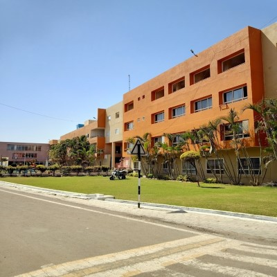
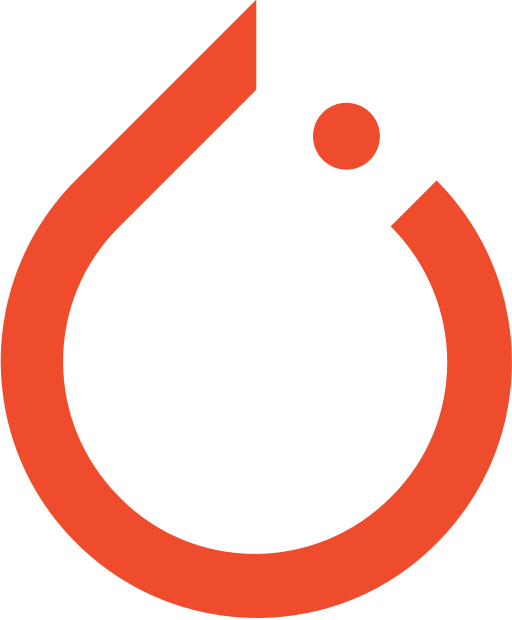
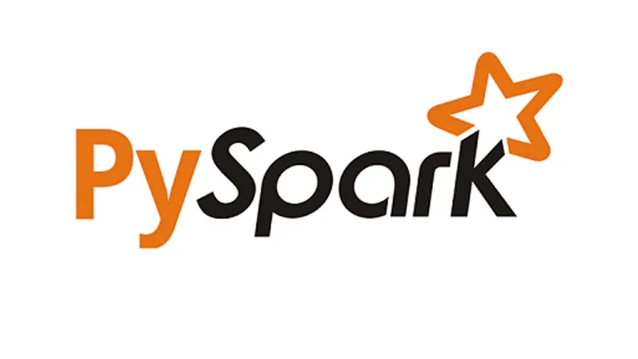
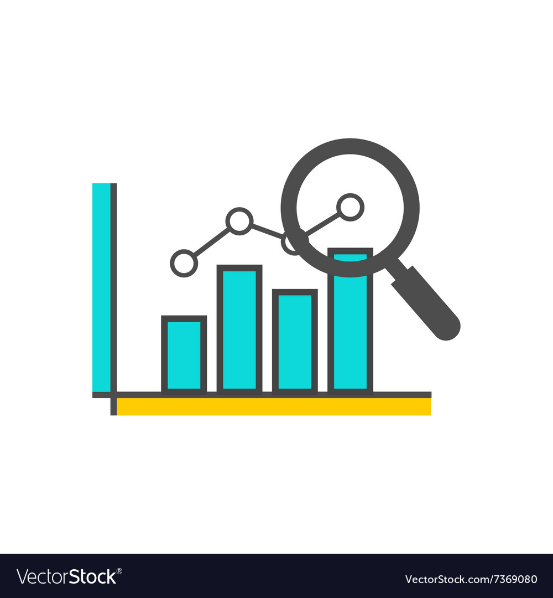
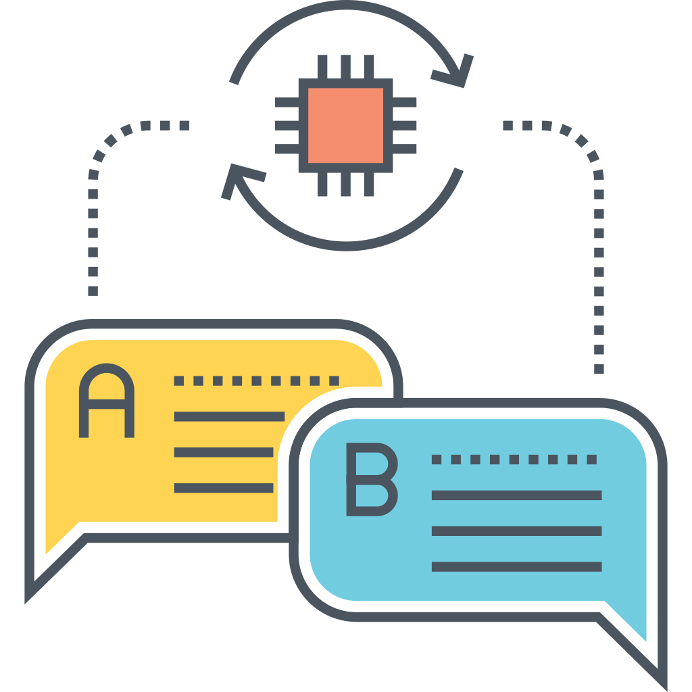
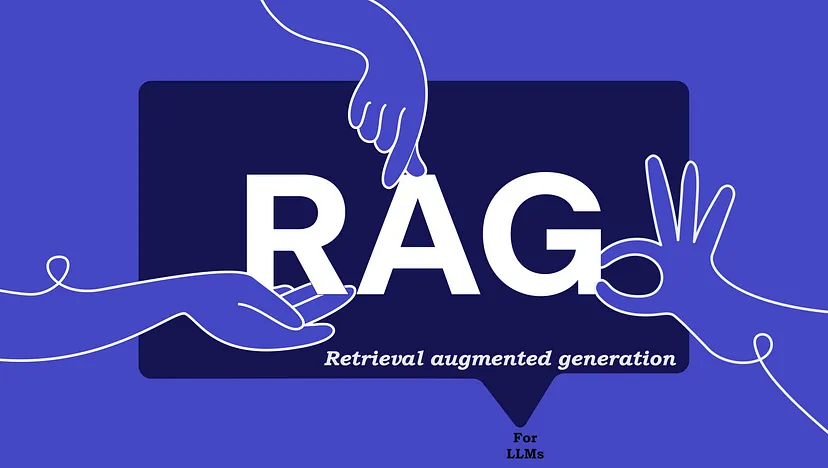

About
As a Master of Science candidate in Data Science at The George Washington University, I am passionate about applying machine learning and data engineering techniques to solve complex business problems. With a Bachelor of Engineering in Computer Science & Engineering from R.G.P.V. and relevant certifications in Python and Machine Learning, I have professional working experience in programming languages like Python, R, and SQL, as well as tools and frameworks such as PyTorch, TensorFlow, and Tableau.
My project experience includes projects like developing forecasting models for wind turbine power generation and predicting timely delivery of electronic products using machine learning algorithms like SARIMAX and Random Forest and performing binary classification using an array of algorithms for categorizing an airbnb's rating as above and below average. In addition to this, I have also made projects using convolutional neural network that allows you to determine accents for english based on the audio input. This project can serve as a great utility for native english speakers to be able to communicate well when travelling to countries where english is not a first language. I am also working on a project idea is gonna solve a problem in copyrighting industry where you can encode audio into images such that it can be extracted with high accuracy at the other end so that when someone tries to pirate a software it can be traced using the encoded audio files in the software's user interface. I am also working on a Language model based application to help end users help them optimize their google search by suggesting necessary keywords to get better more relevant search results based on the initial text promopt given by the user..
In my previous roles, I have worked both as a Data Scientist and a Data Engineer. As a data scientist, I worked at The George Washington University- School of Business to take student interview transcripts to generate keyword insights from them to aid to the revenue generation for the business school. As a data engineer I have worked at Larsen and Toubro Infotech where I was promoted from a trainee to a senior data engineering role and took charge of development involving enhancement of the query execution time by 75%, developing business process flows using SQL, server tools, and frameworks. I also led solution design for the new functionalities in the application and developed automations using SQL scripting. With my go-getter mindset, I am always up for leveraging my technical skills and experience to contribute to business success and drive innovation through data-driven solutions.
Education
I hold an Honors Bachelors degree in Computer Science and Engineering from Acropolis Institute of Technology and Research with relevant courseworks like algorithm design and database management using Structured Query Language. I have recently graduated with a masters degree in data science from The George Washington University with specialization in deeper network and algorithm design. My relevant coursework of masters degree include machine learning, data visualization, cloud computing and time series analysis.
The George Washington University
Masters of Science in Data Science
August 2022 - May 2024

Acropolis Institute of Technology and Research
Bachelor of Engineering(Honors) in Computer Science and Engineering
August 2014 - May 2018
Skills
Over the course of my Educational and professional journey, I have acquired following skills that constitute to my current stage in the career. These skills include technical and interpersonal skills needed to excel in the roles in Data Science and Software Engineering and Product Management.
-
 Python
Python -
 SQL
SQL -
 R
R -
 NumPy
NumPy -
 Pandas
Pandas -
 SciPy
SciPy -
 Tensorflow
Tensorflow -

PyTorch
-
 Tableau
Tableau -
 Amazon Web Services
Amazon Web Services -
 Microsoft Azure
Microsoft Azure -
Microsoft Power B.I.
-
 Git
Git -
 MongoDB
MongoDB -
 PostgreSQL
PostgreSQL -

PySpark
-

Exploratory Data Analysis
-
 Feature Engineering
Feature Engineering -
 Machine Learning
Machine Learning -
 Deep Learning
Deep Learning -

Natural Language Processing
-
Vector Databases
-

Retreival Augumented Generation
-
Machine Learning Operations
-
Large Language Models
Work Experience
In the past decade, I have gone through a rigorous journey of working with programming languages starting off as a rookie learner in 2014 and the language C. Since then, I have had the priviledge of learning multiple programming languages, paradigms, tools and frameworks along the way. Although I am on the early side of my Career, I have worked in the following roles that have allowed me to use my knowledge and skills to good use.
Marketing Data Scientist
Coordinating with career services team for George Washington University starting spring 2024 to work on multi-dimensional datasets to track metrics about student success after graduating from the university and generate insights to build upon the educational standards to provide quality education.
Marketing Data Scientist
Implemented the Natural Language Processing Model KeyBERT for analyzing student interviews, resulting in a 40% revenue increase in the last quarter of 2023. Additionally, led the full implementation of this project and managed matriculation projects for prospective students, which boosted revenue by 30% and decreased the student dropout rate for Fall 2023.
Senior Data Engineer
Enhanced query execution time by 75% through knowledge-driven optimizations and improved customer usability by 40% by developing business process flows with SQL and server tools.
Associate Data Engineer
Administered the IFS portfolio with over 50 strategic changes, providing key insights to stakeholders and designing data pipelines that reduced processing time by 55%. Additionally, developed and maintained SQL scripts for automated data processing, enhancing business operation efficiency and accuracy.
Trainee Data Engineer
Improved the process for generating interval-based Excel reports, resulting in a productivity increase of over 50% for the team. Additionally, assumed responsibility for script-based monitoring and maintenance activities using SQL.
Projects and Blogs
Here are some of my contributions, thought process and knowledge sharing in to the world of Data Science on Linkedin and Medium.(Will be adding more blogs and projects soon!!)
- All
- Linkedin Blogs
- Medium Blogs
- Projects


{kind=link}
{kind=link}
{kind=link}
Hobbies and Volunteer Works
There are 2 things that I am always down for, even after a long day, weekends, holidays or essentially when I am not working with data and those are photography and listening to groovy, vibey music. Apart from that, I also am a Volunteer stem cell donor, and a Peace Keeping promoter and practitioner.
Photograhy
Since I was a kid I have seen my dad documenting our lives through latest camera tech and that natually grew on to me as a hobby. I consider photographs and videos as fragments of my time so far and something to cherish when I am sitting watching it all someday inside a cozy room with a neuralink chip inside my head hahaha!!
Music
There is a french word called Frizzon which means a free falling feeling of chill when you listen to songs you like and get goosebumps. That is how music is to me and my playlists are sacred places to feel the same.
Volunteer Stem Cell Doner
Blood cancer is a very difficult to treat disease but thanks to medical research and discovery, There are ways to prevent the adversity of it and deaths by transplanting the stem cell from bone marrows of a similar blood group donor. I have volunteered to be the donor for my blood group as and when needed and registered myself under the organization DKMS-BMST and I feel very content to be able to do contribute to give someone the chance to be cancer free.
Practitioner of Peace
I am a member of United States Institute of Peace where I underwent a graded coursework to promote the idea of peacekeeping for a better human society on earth for the future generations. This is an amazing opportunity to help people understand how social media can be used to bring changes in society to live a peaceful war-free life and understand the pain and unrest wars bring and what can we do as an individual to prevent it from happening.
Testimonials
This section showcases endorsements from my colleagues and seniors and Professors, reflecting the trust and satisfaction in the quality and impact of my professional work.
Contact
Please feel free to reach out to talk about anything related to tech, data, music and photography.
Location:
Washington, D.C, 20052
Email:
info@example.com
Call:
+1 5589 55488 55s